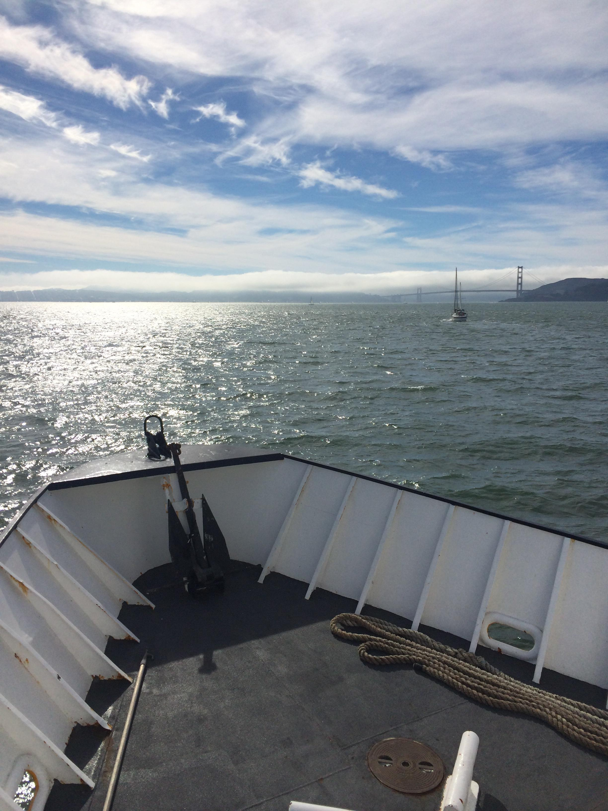
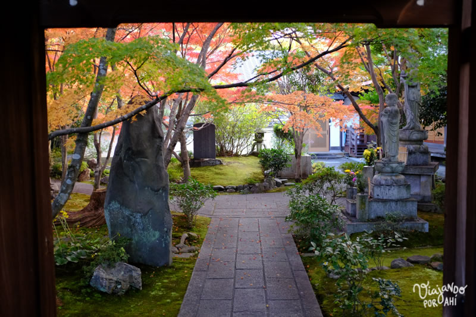

CRUZANDO LOS BOSQUES DE PALMA DE CERA es una experiencia que querrás vivir si tienes la condición suficiente de resistir una exigente travesía de 86 kilómetros. Esta ruta rodea los bosques nativos de Palma de Cera, únicos en Colombia. El volcán Cerro Machín, será testigo de nuestro paso mientras dejamos atrás kilómetro a kilómetro uno de los pasos nacionales que marcó un hito en nuestra nación. No permitas que te la cuenten, vive esta experiencia y has parte de la historia al cruzar el mítico camino real como alguna vez lo llegaron hacer nuestros ancestros. Salento – Cajamarca Duración: De 6 a 7 horas Distancia: 86 kilómetros Categoría: Paramo.
Esta ruta rodea los bosques nativos de Palma de Cera, únicos en Colombia, árbol nacional de Colombia y quizás la Palma más alta del mundo. Bordeamos el volcán El Machín en los Andes Centrales de Colombia. El nivel de exigencia de para esta travesía es el máximo, donde nuestros visitantes podrán medir sus condiciones físicas al extremo. Saliendo del municipio de Salento en dirección al departamento del Tolima usaremos el mítico Camino Real para disfrutar de los hermosos paisajes y gran biodiversidad que nos ofrece esta aventura.
Ingeniera de profesión, viajera de vocación, trabajo como freelance lo cual me permite desarrollar también mi pasión por los viajes, trabajo desde diferentes paises a través de internet.
Soy Colombiana, me gusta viajar lento, caminar, nadar, llenar cuadernos y disfrutar de los detalles cotidianos de cada lugar que visito.
Son uno de los atractivos turísticos más concurridos de Colombia, sus paisajes verdes y sus majestosas cascadas hacen de los Termales de Santa Rosa un lugar único en el país. Merece la pena visitarlos simplemente por el paisaje, aunque albergan mucho más. En pleno Eje Cafetero, en la parte baja del Parque Municipal Natural Campo Alegre, contiguo a la zona de amortiguación del Parque Nacional de Los Nevados. Situados en una zona privilegiada de la geografía colombiana que merece la pena visitar. Los Termales Santa Rosa de Cabal se encuentran a 10 kilómetros de Santa Rosa de Cabal, en Risarallda, Colombia. La Ciudad de las Araucarias, como también es conocido el municipio, se encuentran muy próxima, a 15 km, de la capital del departamento, Pereira.
El principal atractivo turístico de los termales son obviamente las piscinas de aguas termales y naturales. Las aguas termales provienen del sistema volcánico del Parque Nacional Natural Los Nevados, brotando de la tierra a 70 ºC, y llegando a las piscinas termales a través de cascadas a 40 ºC. La zona del balneario cuenta también con servicios de spa y masajes relajantes de todo tipo. Son muy recomendables para relajarnos los masajes de arena, lodo, aceites, frutas y las exfoliaciones. Los servicios incluidos dentro del Spa no están incluidos con la entrada al complejo termal. Además el entorno del complejo termal cuenta con senderos ecológicos y actividades como descenso en cuerdas por la cascada o canopy. Por lo que disponen de opciones de entretenimiento para todos los gustos y es un plan ideal para ir en familia o con amigos
Ingeniera de profesión, viajera de vocación, trabajo como freelance lo cual me permite desarrollar también mi pasión por los viajes, trabajo desde diferentes paises a través de internet.
Soy Colombiana, me gusta viajar lento, caminar, nadar, llenar cuadernos y disfrutar de los detalles cotidianos de cada lugar que visito.